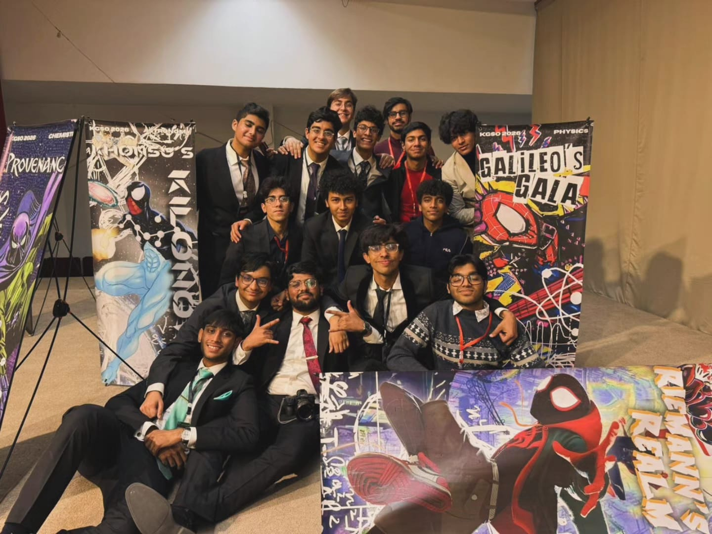
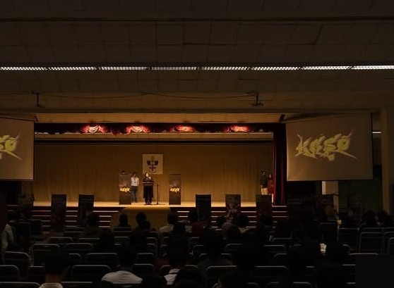
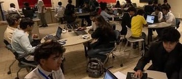
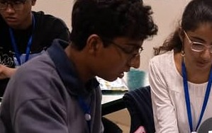
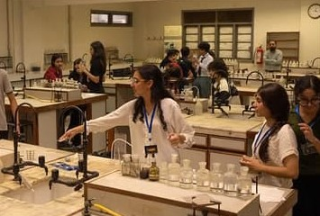
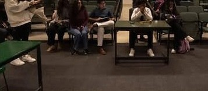
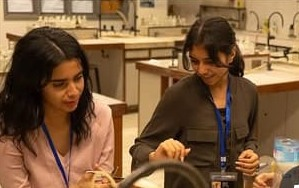

Astronomy
e.g. Horizon Protocol / Khonsu's Kilonova. Subjects: Astrophysics, stellar properties, planetary habitability, blackbody radiation, Wien’s displacement law, light spectroscopy.
The Karachi Grammar School Olympiad — the flagship multi-day national STEM competition of the KGS STEM Society.
The KGS STEM Society is a student-run organization at Karachi Grammar School College Section, rooted in the school’s long-running science and math societies, including the Einstein Society. Its flagship is the Karachi Grammar School Olympiad (KGSO), a multi-day national STEM competition.
The 12th annual edition runs in 2026 — twelve years of KGSO. It is one of the largest high school STEM competitions in Pakistan. It draws A-Level schools, O-Level institutions, and colleges nationwide. Hundreds of delegates take part. Teams represent schools or compete as independent external delegations.
Twelve unique modules run over three days. Themes refresh each edition. Standard modules include:
e.g. Horizon Protocol / Khonsu's Kilonova. Subjects: Astrophysics, stellar properties, planetary habitability, blackbody radiation, Wien’s displacement law, light spectroscopy.
e.g. Cybernetic Cellspace / Auerbach's Aristeia. Subjects: Genetics, molecular biology, major human organ systems, cellular engineering, biological diseases.
e.g. Atomic Odyssey / Prowler's Provenance. Subjects: Analytical chemistry, reaction mechanics, laboratory puzzle-solving, elemental compound behaviors.
e.g. Feynman's Frenzy / Galileo's Gala. Subjects: Theoretical and applied mechanics, quantum physics concepts, thermodynamics, experimental physics testing.
e.g. Breach 422 / Torvald's Terminal. Subjects: Core programming (such as Python), algorithms, data structures, network security, code debugging.
e.g. Calculi Hipparchi. Subjects: Calculus, advanced algebra, complex numbers, geometric theorems, fast-paced logical mathematics.
e.g. Turing's Turmoil. Subjects: Spatial reasoning, cryptograms, abstract pattern matching, lateral thinking riddles.
e.g. Suburbia Prosopagnosia. Subjects: Forensic sciences, logical cross-examinations, fingerprint and print analysis, criminal case deduction.
e.g. Neural Nexus. Subjects: Famous psychological experiments, cognitive behavioral disorders, neuroscience basics, clinical psychology history.
e.g. Neon Requiem. Subjects: Tactical strategy, multiplayer dynamics, statistical analysis of mechanics, competitive problem-solving.
e.g. Crimson Arcadia / Eldar's Atrium. Subjects: Analytical pop-culture arguments, thematic debates, world-building evaluation, creative presentation pitches.
Title varies by iteration. Subjects: Material building constraints, design prototyping, structural efficiency, physical building application.
Each module runs as its own timed round over the three-day olympiad. Theme names refresh by edition, but the twelve subject areas stay consistent so teams can prepare across astronomy through engineering.

Scenes from a recent KGSO — stage, labs, and competition halls.






The Best Delegation Trophy goes to the school with the most points across all twelve modules. Named rivals include Aitchison College Science Society (ACSS), Nixor College, and Cedar College. In recent editions, Aitchison College secured Best Delegation.
Late January 2025 results: